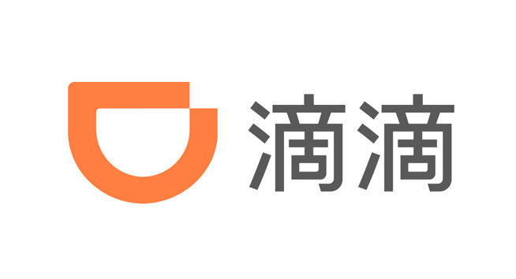
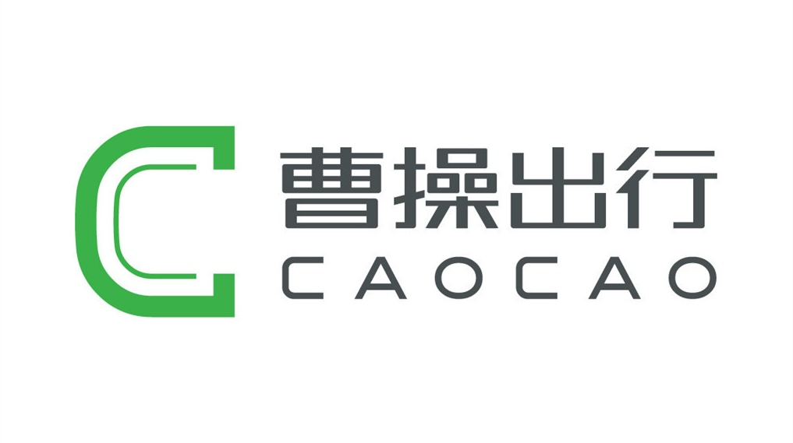

about me
The road that brought me here
从信管本科到智驾数据科学，一路把业务问题翻译成可量化的指标与自动化的流程。
信息管理与信息系统 · 本科
天津工业大学（双一流）Education
前端 JS/CSS/HTML 与后端 Java 一起学，独立完成宠物商店管理系统——从需求调研到 6 大功能模块全链路交付。在这里打下"前后端全栈 + 系统设计"的工程底子，后面所有的技术落地都从这套基本功长出来。
独立交付 6 大功能模块 · 全链路闭环
实施顾问 · SaaS 解决方案落地
明源云Work
作为乙方顾问驻场房地产客户，主导 3 家企业 ERP 系统的架构搭建、配置与交付。这段经历沉淀出"把复杂系统逻辑翻译成业务语言"的能力——后来做数据分析、写 Agent，都靠这套把技术讲给业务听的功夫。
交付 3 家企业 ERP · 服务续签 6 家
电子商务 · 硕士
南京大学（985）Education
主修机器学习、大数据挖掘与统计学，用 Python 爬虫 + NLP 分析电商评论情感。追踪平台经济与二手交易方向产出两篇论文。统计与建模的方法论在这里成型，让后面的数据工作有了"不只是取数、而是能检验"的底子。
发表 JECR 期刊论文（2025.05）+ CNAIS 会议论文（2025.09）
闲鱼循环商店 · 项目研究员
阿里巴巴Work
维护循环商店数据库，结合问卷深挖商品上架、库存周转等 C2B2C 场景痛点，定位影响新品上架速度的关键瓶颈，推动优化方案落地。第一次完整跑通"数据 → 痛点定位 → 方案 → 业务采纳"，这套闭环后来在曹操、滴滴反复用上。
优化方案 被项目团队采纳 落地
策略运营
曹操出行（吉利优行）Work
守底线——搭核心指标看板、建异动根因链路；求盈利——用 SQL 漏斗定位机场场站"响应→成单"28% 流失节点；精平衡——基于响应率与计占比设计动态调价，AB 验证后全量上线。把"指标体系 + 漏斗 + AB 验证"这套数据驱动决策的手法彻底跑熟。
毛利率周波动率 6.8%→4.2% · 机场完单率 62%→71% · AB 完单率 +4.2pp
自动驾驶 · AI 数据科学实习生
滴滴出行Work
独立设计开发多子代理 Skill 系统，经 MCP 串联数仓、问题追踪、仿真三类平台，跑通智驾版本回退的发现→定位→仿真验证端到端自动闭环；同时主导研发让行功能指标，把"让行是否合理"变成可量化标尺。过去攒下的业务理解、数据手法和工程能力，在这里汇成一套 AI Agent 落地能力。
回退发现时长 4h→0.5h · SQL 自动生成成功率 65%→92% · 仿真累计 2000+ 次
project
Things I built & measured
- 01版本回退监控 Agent 开发
- 02让行功能指标体系构建
- 03场站全链路搭建
从 0 到 1 的 Agent 系统、可量化的评测指标、跑通业务闭环的数据方案——每个项目都用结果说话。

01版本回退监控 Agent开发
滴滴 · 自动驾驶 · 2026.07 — now
让行功能指标体系构建
滴滴 · 自动驾驶 · 2026.07 — now

03场站全链路搭建
曹操出行 · 策略运营 · 2025.10 — 2026.04
skills & life
Draw a card, know me more
两类卡组——技能与爱好。随机抽一张，看看会遇到哪面的我。
点「随机抽一张」开始，或直接点某张卡翻开